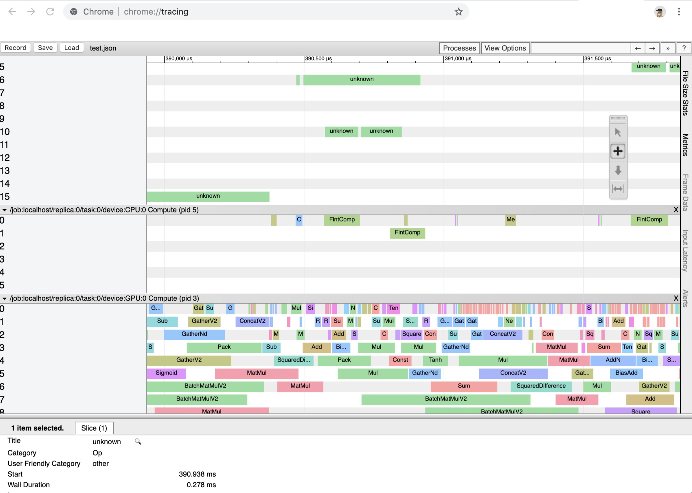

Miscellaneous Tools
There are many handy tools implemented in ADCME for analysis, benchmarking, input/output, etc.
Debugging and Printing
Add the following line before Session and change tf.Session to see verbose printing (such as GPU/CPU information)
tf.debugging.set_log_device_placement(true)tf.print can be used for printing tensor values. It must be binded with an executive operator.
# a, b are tensors, and b is executive
op = tf.print(a)
b = bind(b, op)Debugging Python Codes
If the error comes from Python (through PyCall), we can print out the Python trace with the following commands
import traceback
try:
# Your codes here
except Exception:
print(traceback.format_exc())This Python script can be inserted to Julia and use interpolation to invoke Julia functions (in the comment line).
Profiling
Profiling can be done with the help of run_profile and save_profile
a = normal(2000, 5000)
b = normal(5000, 1000)
res = a*b
run_profile(sess, res)
save_profile("test.json")- Open Chrome and navigate to chrome://tracing
- Load the timeline file
Below shows an example of profiling results.

Save and Load Python Object
ADCME.psave — Function.psave(o::PyObject, file::String)Saves a Python objection o to file. See also pload
ADCME.pload — Function.pload(file::String)Loads a Python objection from file. See also psave
Save and Load Diary
We can use TensorBoard to track a scalar value easily
d = Diary("test")
p = placeholder(1.0, dtype=Float64)
b = constant(1.0)+p
s = scalar(b, "variable")
for i = 1:100
write(d, i, run(sess, s, Dict(p=>Float64(i))))
end
activate(d)